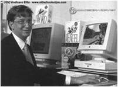

RAMOS MERAZ AMAIRANY
presentacion
hecho por: RAMOS MERAZ AMAIRANY / chika_576@hotmail.com
¿Qué es el software?
Se refiere al soporte lógico de una computadora digital. Comprende el conjunto de componentes necesarios para realizar una tarea específica, contraponiéndose a componentes físicos del sistema (hardware).
tipos de software
- el software propietario
- el software libre
¿Qué es el software propietario?
Hace referencia a cualquier programa informático donde están limitadas las posibilidades de uso, modificación y distribución.
¿Qué es el software libre?
Este software respeta la libertad de los usuarios sobre el producto adquirido. Los programas pueden ser usados, copiados, modificados libremente.
GNU/Linux
GNU se inicia en 1983 por Richard Stallman para desarrollar un sistema operativo Unix compuesto por un software libre. En 1991 Linus Torvalds empezó a trabajar para MINIX, lo que sería luego Linux.

Ventajas del software propietario
- 1.- Propiedad y decisión de uso del software por parte de la empresa.
- 2.- Soporte para todo tipo de hardware.
- 3.- Mejor acabado de la mayoría de las aplicaciones.
- 4.- Las aplicaciones nº1 son propietarias.
- 5.- Ocio para computadoras.
- 6.- Menor necesidad de técnicos especializados.
- 7.- Mayor mercado laboral actual.
- 8.- Mejor protección de la obras con copyright.
- 9.- Unificación de productos.
Propiedad y decisión de uso del software por parte de la empresa
El desarrollo del software requiere grandes inversiones. Si no se protegiera, el estudio se realizaría sin necesidad, porque la competencia podría apropiarse del producto tras finalizarlo para sus propios fines.
Soporte para todo tipo de hardware
Los fabricantes de dispositivos para computadoras personales producen drivers o hardware sólo compatible con Windows para garantizar un soporte de hardware seguro.
Mejor acabado de la mayoría de las aplicaciones
Para un mayor rendimiento y un aumento en las ventas, se da mejor acabado a las aplicaciones en temas de estética y usabilidad de la aplicación.
Las aplicaciones nº1 son propietarias
El dominio del mercado interesa a los fabricantes de hardware, pero también de software.
Ocio para computadoras
Los desarrolladores de juegos tienen en su punto de mira el mercado lucrativo (consolas y computadoras). En el caso de los personales, la práctica totalidad de títulos benefician a Microsoft Windows.
Menor necesidad de técnicos especializados
El mejor acabado en estos sistemas permiten simplificar el tratamiento de dichos sistemas, reduciendo los costes de mantenimiento.
Mayor mercado laboral actual
Cualquier trabajo que se relacionado con la informática pasará por conocer herramientas de software propietario.
Mejor protección de la obras con copyright
Las obras que se protegen se ven beneficiadas por mecanismos anticopia que plagian o dificultan la piratería.
Unificación de productos.
Se toman decisiones centralizadas en torno a una línea de productos para que no se desvíe la idea principal y generar productos funcionales altamente compatibles
Ventajas del software libre
- 1.- Económico.
- 2.- Libertad de uso y redistribución.
- 3.- Independencia tecnológica.
- 4.- Fomento de la libre competencia al basarse en servicios y no licencias.
- 5.- Soporte y compatibilidad a largo plazo.
- 6.- Formato estándar
- 7.- Sistemas sin puertas traseras y más seguros.
- 8.- Corrección mas rápida y eficiente de fallos.
- 9.- Métodos simples y unificados de gestión del software.
- 10.- Sistemas de expansión.
Económico
El bajo o nulo coste de los productos libres permiten proporcionar servicios y ampliar sus infraestructuras sin que se vean mermados sus intentos de crecimiento por no poder hacer frente al pago de las licencias.
Libertad de uso y redistribución
Las licencias ya existentes permiten instalar el software tantas veces y en tantas computadoras como se quiera.
Independencia tecnológica
El acceso al código fuente (instrucciones que debe seguir la computadora para ejecutar un programa) permite desarrollar productos sin desarrollar el producto desde cero.
Fomento de la libre competencia al basarse en servicios y no licencias.
Los modelos de negocio generados por este software es la contratación de servicios de atención al cliente.
Soporte y compatibilidad a largo plazo.
En estos software se emplean nuevas tecnologías que siempre sean compatibles con los sistemas anteriores, al contrario que en los software propietarios
Formato estándar
Permiten una interoperatividad más alta entre sistemas evitando incompatibilidades.
Sistemas sin puertas traseras y más seguros.
El acceso al código fuente permite que hackers y empresas de seguridad puedan auditar programas. Las puertas traseras son ilógicas.
Corrección mas rápida y eficiente de fallos.
Los fallos se solucionan más rápido en este software.
Métodos simples y unificados de gestión del software.
La mayoría de las distribuciones de Linux incorporan algún sistema que unifica el método de instalación de programas, librerías…
Sistemas de expansión.
Las ventajas que aportan las soluciones libres a muchas empresas y las aportaciones a la comunidad han permitido un constante crecimiento del software libre.
Propietario vs libre
Photoshop vs Gimp Nero Burning Rom vs CDBurnerXP Pro McAfee Viruscan vs AntiVir MSN vs Pidgin Windows Media Player vs VLC media player WinZip vs 7-Zip Internet explorer vs Mozilla Firefox
Transition Styles
You can select from different transitions, like:
Cube -
Page -
Concave -
Zoom -
Linear -
Fade -
None -
Default
Themes
Reveal.js comes with a few themes built in:
Default -
Sky -
Beige -
Simple -
Serif -
Night
Moon -
Solarized
* Theme demos are loaded after the presentation which leads to flicker. In production you should load your theme in the <head> using a <link>.
Global State
Set data-state="something" on a slide and "something"
will be added as a class to the document element when the slide is open. This lets you
apply broader style changes, like switching the background.
Custom Events
Additionally custom events can be triggered on a per slide basis by binding to the data-state name.
Reveal.addEventListener( 'customevent', function() {
console.log( '"customevent" has fired' );
} );
Slide Backgrounds
Set data-background="#007777" on a slide to change the full page background to the given color. All CSS color formats are supported.
Image Backgrounds
<section data-background="image.png">Repeated Image Backgrounds
<section data-background="image.png" data-background-repeat="repeat" data-background-size="100px">Background Transitions
Pass reveal.js the backgroundTransition: 'slide' config argument to make backgrounds slide rather than fade.
Background Transition Override
You can override background transitions per slide by using data-background-transition="slide".
Clever Quotes
These guys come in two forms, inline:
“The nice thing about standards is that there are so many to choose from”
and block:
“For years there has been a theory that millions of monkeys typing at random on millions of typewriters would reproduce the entire works of Shakespeare. The Internet has proven this theory to be untrue.”
Pretty Code
function linkify( selector ) {
if( supports3DTransforms ) {
var nodes = document.querySelectorAll( selector );
for( var i = 0, len = nodes.length; i < len; i++ ) {
var node = nodes[i];
if( !node.className ) {
node.className += ' roll';
}
}
}
}
Courtesy of highlight.js.
Intergalactic Interconnections
You can link between slides internally, like this.
Fragmented Views
Hit the next arrow...
... to step through ...
any type- of view
- fragments
Fragment Styles
There's a few styles of fragments, like:
grow
shrink
roll-in
fade-out
highlight-red
highlight-green
highlight-blue
current-visible
highlight-current-blue
Spectacular image!

Export to PDF
Presentations can be exported to PDF, below is an example that's been uploaded to SlideShare.
Take a Moment
Press b or period on your keyboard to enter the 'paused' mode. This mode is helpful when you want to take distracting slides off the screen during a presentation.